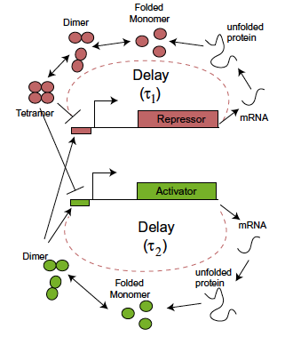
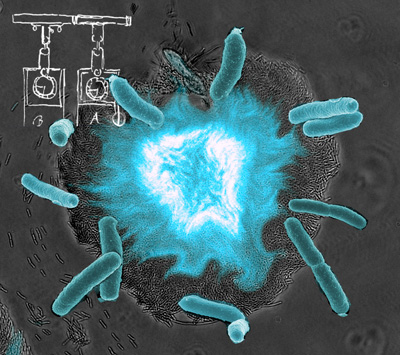

Progress in genomic research has led to the realization
that effective models for predicting cellular behavior must take into account
the network interactions that dynamically mediate gene regulation. Since
behavior arising from these complex interactions is difficult to predict
without quantitative models, there is a need for experimentally validated
computational modeling approaches that can be used to understand the
complexities of gene regulation. Working in close collaboration with Jeff Hasty at the Biology
Department, UCSD, we develop nonlinear stochastic models for the dynamics of
genetic regulatory modules and their interactions in living cells.
- Synthetic gene oscillators
We designed and constructed a novel two-component
gene oscillator in bacteria [i]E. coli[/i], based on principles observed to be critical for the core of
many circadian clock networks [Stricker et al, Nature, 2008]. The design of the oscillator
was based on a common motif of two inter-connecting positive and negative
feedback loops. A small transcriptional delay in the negative feedback loop leads to stochastic relaxation oscillations
which are further amplified and stabilized by the positive feedback loop.
We use computational modeling to develop design criteria for achieving oscillations in this system.
Drawing an analogy to integrate-and-fire dynamics in neuroscience,
we have coined the term "degrade-and-fire" oscillations [Mather et al, PRL, 2009]
to describe the essence of the dynamics.


In our subsequent work [Danino et al, Nature, 2010], we engineered gene network with global intercellular coupling
that is capable of generating synchronized oscillations in a growing population of cells. Using microfluidic devices tailored for
cellular populations at differing length scales, we investigated the collective synchronization properties along with
spatiotemporal waves occurring at millimetre scales.
- Intrinsic and extrinsic
noise in the dynamics of genetic modules.
There is strong experimental evidence that the level of expression from the
same gene varies significantly from one cell to another within a
genetically-identical colony [Elowitz, 2002] .
Such variations are observed in the cells of
organisms ranging in complexity from bacteria to mammals. Theoretically, with
mRNA numbers that are often less than ten, the stochastic nature of the
underlying biochemical reactions must lead to large fluctuations.
Stochasticity in gene expression is generally believed to be detrimental
to cell function because fluctuations in protein levels can corrupt
the quality of intracellular signals. One the other hand, randomness,
can provide a mechanism for phenotypic and cell-type diversification.
In order to address the issues of randomness in genetic regulation networks,
sophisticated analytical and numerical tools are being developed.
Recent studies have demonstrated that a significant component of expression variability
arises from extrinsic factors thought to influence multiple genes in
concert [M.Elowitz, 2002, 2005, Raser & O'Shea, 2005], yet the
biological origins of this extrinsic variability have received
little attention. We combine computational modeling
with fluorescence data generated from multiple promoter-gene inserts
in Saccharomyces cerevisiae to identify two major sources of
extrinsic variability [Volfson et al, 2006].
One unavoidable source arising from the
coupling of gene expression with population dynamics leads to a
ubiquitous noise floor in expression variability.
A second source originating from a common upstream transcription factor exemplifies
how regulatory networks can convert intrinsic or extrinsic noise in regulator
expression into extrinsic noise at the output of a target gene. Our
results highlight the importance of the interplay of gene regulatory
networks with population heterogeneity for understanding the origins
of cellular diversity.
Stochastic biochemical reactions are usually simulted using so-called Gillespie algorithm [Gillespie,
1977]. However, strictly speaking, this algorithm only applies to memoryless Markovian reactions in cnostant conditions.
We developed generalizations of this classical algorithm which allow us to apply it
for modeling biochemical reactions in growing and dividing cells [Lu et al,
2004]. Also, we developed another modificaton of Gillespie algorithm that makes it applicable to non-Markovian delayed reactions [Bratsun et al, 2005]. We use these algorithms to model the stochastic dynamics of our synthetic gene circuits, where delayed negative feedback often plays the key role.
If you want to learn more about fluctuations and noise in biology, check out my recent review [Tsimring, 2014]
- Role of transcriptional delays in the dynamics of genetic regulatory networks
We study the stochastic properties of gene regulation taking into account the
non-Markovian character of gene transcription and translation
[Bratsun et al, 2005]. We show that
time delay in protein production or degradation may change the behavior of the
system from stationary to oscillatory even when a deterministic counterpart of
the stochastic system exhibits no oscillations. Assuming signicant
decorrelation on the time scale of gene transcription, we deduce a truncated
master equation of the reactive system and derive an analytical expression for
the autocorrelation function of the protein concentration. For weak feedback
the theory agrees well with numerical simulations based on the modified
direct Gillespie method.
We used these ideas to explain and analytically study oscillations in a simple model of "degrade-and-fire" oscillations in a transcriptional delayed negative
feedback loop [Mather et al, 2009]. We use deterministic and stochastic modeling to investigate
how a small time delay in such regulatory networks can lead to strongly nonlinear oscillations that can be
characterized by "degrade-and-fire" dynamics. We show that the period of the oscillations can be
significantly greater than the delay time, provided the circuit components possess strong activation and
tight repression. The variability of the period is strongly influenced by fluctuations near the oscillatory
minima, when the number of regulatory molecules is small.
- Coupling of genetic modules.
Our research in this area builds upon previous investigations of elementarty synthetic
genetic circuits. This work includes the development of positive feedback
[Hasty et al., 2000,Isaacs et al., 2003]
and co-repressive switching networks [Gardner et al., 2000], as well as an
oscillating circuit [Elowitz and Leibler, 2000]. These previous studies have
explored several of the building-block modules that constitute large-scale
genomic wiring, and thus represent a first step towards an understanding of
whole-genome regulatory complexity. We are builaingd upon these previous
studies by designing and constructing higher order networks consisting of
coupled genetic regulatory modules.
In our paper [Prindle et al, 2014]
we demonstrated intracellular synchronization of two dissimilar synthetic gene oscillators using the mechanism of queueing for the common protease ClpXP. This queueing provide a strong mechanism by which the faster oscillator slows downand "waits" for the slower one to fire together.
-
Information Transmission in Dynamic Signaling Networks
Stochasticity inherent to biochemical reactions (intrinsic noise) and variability in cellular states (extrinsic noise) can degrade information transmitted through biochemical signaling networks. Using a new algorithm we analyzed in [Selimkhanov et al., 2014] the ability of temporal signal modulation, i.e. dynamics, to reduce noise-induced information loss. In three signaling pathways, Erk, Ca2+, and NFkB, response dynamics result in significantly greater information transmission capacities than when these responses are reduced to static signals. Theoretical analysis using information-theory formalism demonstrated that signaling dynamics has a key role in overcoming extrinsic noise. Numerical simulations and experimental measurements of information transmission in the Erk network under partial inhibition confirm our theoretical predictions and show that signaling dynamics mitigate, and can potentially eliminate, information loss due to extrinsic noise. By curbing the information degrading effects of cell to cell variability, dynamic responses substantially increase the accuracy of biochemical signaling networks.
- Correlations, Criticality, and Adaptivity in Cellular networks
A major challenge for systems biology is to deduce the molecular interactions that underlie correlations observed
between concentrations of different intracellular molecules. Although direct explanations such as coupled transcription or direct
protein-protein interactions are often considered, potential indirect sources of coupling have received much less attention. In [Mather et al., 2010]
we showed how correlations can arise generically from a posttranslational coupling mechanism involving the processing of multiple
protein species by a common enzyme. By observing a connection between a stochastic model and a multiclass queue, we obtained
a closed form expression for the steady-state distribution of the numbers of molecules of each protein species. Upon deriving
explicit analytic expressions for moments and correlations associated with this distribution, we discovered a striking phenomenon
that we called correlation resonance: for small dilution rate, correlations peak near the balance-point where the total rate of influx of
proteins into the system is equal to the maximum processing capacity of the enzyme. Given the limited number of many important
catalytic molecules, our results may lead to new insights into the origin of correlated behavior on a global scale.
In [Steiner et al., 2016] we showed more generally that queueing for a limited shared resource in broad classes of enzymatic networks in certain conditions leads to a critical state characterized by strong and long-ranged correlations between molecular species. An enzymatic network reaches this critical state when the input flux of its substrate is balanced by the maximum processing capacity of the network. We also consideaedr enzymatic networks with adaptation, when the limiting resource (enzyme or cofactor) is produced in proportion to the demand for it. We showed that the critical state becomes an attractor for these networks, which points toward the onset of self-organized criticality. The adaptive queueing motif that leads to significant correlations between multiple species may be widespread in biological systems.
References
- M. R. Bennett, W. L. Pang, N. A. Ostroff, B. L. Baumgartner, S. Nayak,
L. S. Tsimring, J. Hasty. Metabolic gene regulation in a dynamically changing environment, Nature,
454, 1119-1122 (2008).. See also News and Views
- D.A. Bratsun, D.N. Volfson, L.S. Tsimring, and J. Hasty.
Proc. Natl. Acad. Sci., 102, no.41, 14593-12598 (2005).
- N. Cookson, S. Cookson, L. S. Tsimring, J. Hasty. Cell cycle-dependent variations in protein concentration. Nucleic Acids Research, 1-6 (2009).
-
N. Cookson, L. S. Tsimring, J. Hasty. The pedestrian watchmaker: Genetic clocks from engineered oscillators. FEBS Letters, 583 3931–3937 (2009)
-
T. Danino, O. Mondragon-Palomina, L. S. Tsimring, J. Hasty. A synchronized quorum of genetic clocks, Nature 463, 326-330 (21 January 2010).
- J.C. Dunlap. Cell 96: 271-290, 1999.
- M. B. Elowitz and S. Leibler, Nature 403:335, 2000.
- T. S. Gardner, C. R. Cantor, and J. J. Collins, Nature 403: 339, 2000.
-
D. T. Gillespie. Exact stochastic simulation of coupled chemical reactions. J. Physical Chemistry, 81(25):2340-2361, 1977
- J. Hasty, J. Pradines, M. Dolnik, and J. J. Collins, Proc. Natl. Acad. Sci. 97: 2075, 2000.
- J. Hasty, F. Isaacs, M. Dolnik, D. McMillen, and J. J. Collins, Chaos 11: 207, 2001.
- J. Hasty and J. Collins Nature Genetics, 31 (1): 13-4, 2002.
- F. Isaacs, J. Hasty, C. Cantor, and J. J. Collins, Proc. Natl. Acad. Sci. 100: 7714, 2003.
- P.L. Lakin-Thomas, Trends in Genetics 16: 135-142, 2000.
-
D. Longo, A. Hoffmann, L. S. Tsimring, J. Hasty. Coherent activation of a synthetic mammalian gene network. Systems and Synthetic Biology, 4, 15-23 (2009).
- T. Lu, D. Volfson, L.S. Tsimring and J. Hasty. IEE Systems Biology 1:121-127, 2004.
-
W. Mather, M. R. Bennett, J. Hasty, L. S. Tsimring, Delay-induced degrade-and-fire oscillations in
small genetic circuits, Phys. Rev. Lett., 102, 068105 (2009). Supplementary Information.
-
W. Mather, N. A. Cookson, J. M. Hasty, L. S. Tsimring , and R. J. Williams. Correlation resonance generated by coupled enzymatic processing. Biophys. J., 99, 3172-3181 (2010).
-
A. Prindle, J. Selimkhanov, H. Li, I. Razinkov, L. S. Tsimring and J. Hasty. Rapid and tunable post-translational coupling of genetic circuits. Nature, April 9, 2014, doi:10.1038/nature13238
- J. M. Raser and E. K. O'Shea, Science 304: 1811, 2003.
- J. Selimkhanov, B. Taylor, J. Yao, A. Pilko, J. Albeck, A. Hoffmann, L. Tsimring, R. Wollman. Accurate information transmission through dynamic biochemical signaling networks, Science, 346(6215), 1370-1373 (2014).
- P. J. Steiner, R. J. Williams, J. Hasty, L. S. Tsimring. Criticality and adaptivity in enzymatic networks, Biophysical Journal, 111, 10787-1087 (2016). Supplementary information.
- J. Stricker, S. Cookson, M. Bennett, W. Mather, L. S. Tsimring, J. Hasty. A robust and
tunable synthetic gene oscillator. Nature, 456(7221):516-9 (2008).
- L. S. Tsimring, D. Volfson, J. Hasty.
Modeling stochastically driven genetic circuits, Chaos, 16, 026103 (2006).
- L. S. Tsimring. Noise in Biology, Rep. Progr. Phys., 77 (2014) 026601
-
D.Volfson, J.Marciniak, W.J. Blake, L.S. Tsimring, and J. Hasty, Nature, 439, 861-864 (16 Feb 2006).
(see also a brief review of this paper in
Nature Reviews Genetics 7, 80-81 (February 2006)